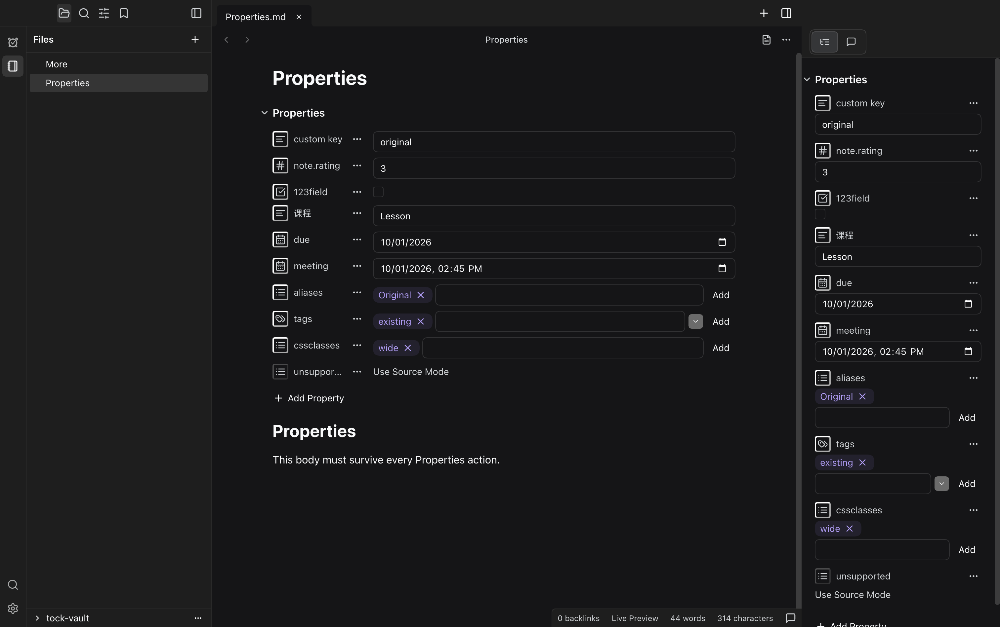
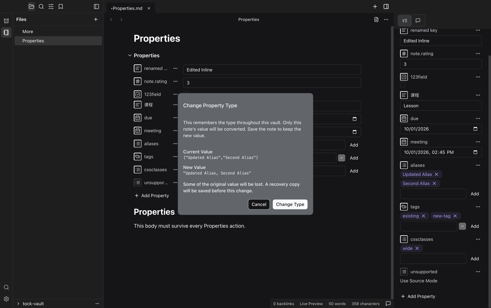
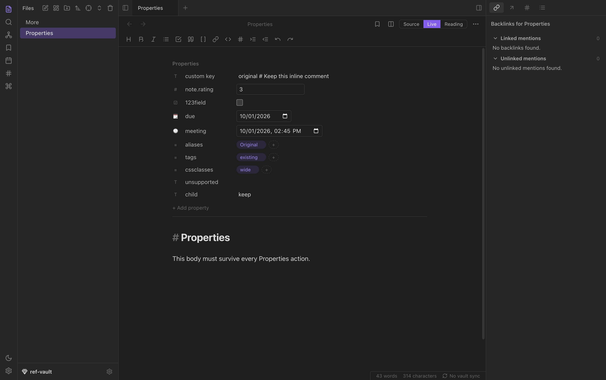

Source e193bf3f; pinned WebObsidian c41967a. Default dark, no TockTeam skin. All images: 1512 × 949 CSS pixels, 2× scale, 3024 × 1898 pixels.
Live Preview · Initial Fixture

Live Preview · Explicit Loss Confirmation

Live · Initial Fixture

See proof.json for actions, exact bytes, theme contrast, runtime errors, and process cleanup.